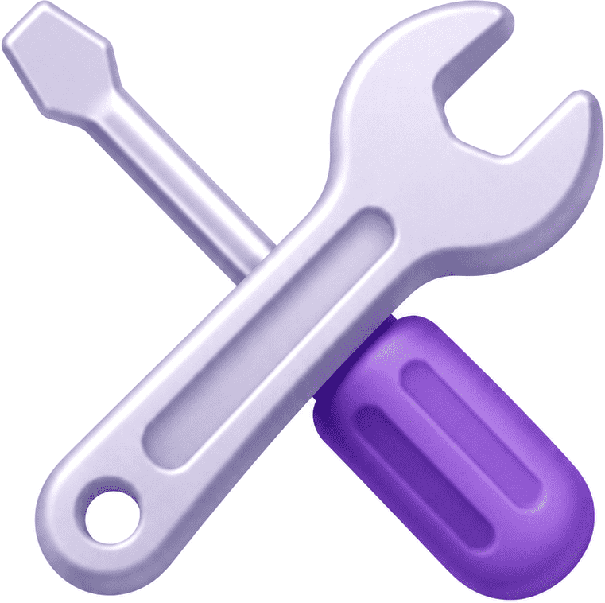

Un momento, estamos trayendo el contenido.
Busca palabras en español y descubre su significado mediante videos en Lengua de Señas Peruana.
Las señas representan conceptos, no siempre palabras.
Los términos en español son solo una referencia para facilitar la búsqueda y el aprendizaje.
Las variantes regionales enriquecen la Lengua de Señas Peruana.
Sigue aprendiendo y descubre más cada día.

HERRAMIENTASEscuchando el ambiente…
📢 Consejos para captar mejor el audio:
Para usar los subtítulos en tiempo real, abre esta página en Google Chrome (en Android o en tu computadora). Otros navegadores como Safari o Firefox todavía no soportan esta función correctamente.
Elige a qué quieres jugar.
Cargando...
Elige el nivel y el modo de juego para tu ronda de práctica.
Nivel
Modo de juego
Revisión de respuestas
Elige el nivel para practicar completando palabras con la letra que falta.
Nivel
Elige el nivel para practicar uniendo cada imagen con su palabra.
Nivel
🖼️ Imágenes
🔤 Palabras
Revisión de respuestas
Cargando contenido de Alfabetización...
🔊👄 Fonética
✏️ Grafía
📚 Ejemplos de palabras
La comunicación entre las personas sordas, que utilizan la lengua de señas, y los oyentes, que nos comunicamos en español, a veces puede ser un verdadero desafío 🚧. ¡Por eso existe LSPedia! 🎉 Nuestro objetivo es ser un puente que conecte a ambos grupos. ¿Cómo lo logramos? Por un lado, ayudamos a las personas sordas a aprender el significado de diversas palabras en español mediante videos muy fáciles de entender 📹, explicados directamente en lengua de señas 👐. Por otro lado, las personas oyentes pueden aprovechar estos mismos videos para repasar las señas que hayan aprendido de los sordos 👀. Así, aprendiendo juntos, rompemos barreras 🧱🔨 y fomentamos una comunicación e inclusión reales 🌍💙.
Reconocemos que la lengua de señas es el idioma y derecho de la comunidad sorda 🗣️🤲. Valoramos profundamente la labor de sus modelos lingüísticos, educadores e intérpretes 🎓; LSPedia no busca reemplazarlos, sino ser un apoyo 🤝.
Dado que gran parte de la información diaria (literatura, noticias, videos, deporte) está en español 📰📱, nuestro propósito es facilitar la comprensión de estas palabras, impulsando así el progreso constante de la comunidad 📈🙌.
LSPedia es un proyecto cien por ciento personal e independiente 👤; no contamos con financiamiento de ninguna entidad estatal o grupo privado 🚫🏢. Pero trabajamos constantemente en su desarrollo 💻⚙️. ¿Te gustaría apoyarnos? Te explicamos 5 maneras de hacerlo: 👇
Con cualquiera de estas acciones, nos ayudas a que este proyecto siga adelante 🚀.
"Agradecemos mucho tu apoyo, ya sea con ideas, sugerencias o donaciones 🎁. Tu ayuda impulsa el avance de LSPedia, permitiendo que más personas se beneficien de la información y promovamos juntos la inclusión." 🌟🤝